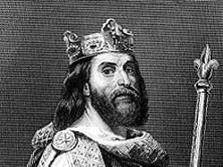

196907246345 Comtesse Cunigunda of Trevern & Ardennes
* omkring 892 Aachen, Cologne, Tyskland
† omkring 923 Aachen, Cologne, Tyskland
Grevinna
Blev ca 31 år
* omkring 892 Aachen, Cologne, Tyskland
† omkring 923 Aachen, Cologne, Tyskland
Grevinna
Blev ca 31 år

393814492691 Princess Ermentrude of France
* mellan 875 och 878
Prinsessa
* mellan 875 och 878
Prinsessa

787628985382 King Louis "the Stammerer" of France
* 846-11-01
† 879-04-10 Compiegne, Frankrike
Kung av Aquittaine o senare Kung av West Francia
Blev 32 år
* 846-11-01
† 879-04-10 Compiegne, Frankrike
Kung av Aquittaine o senare Kung av West Francia
Blev 32 år
787628985383 Queen Adelaide of Paris
* mellan 850 och 853
† 901-11-10 Laon, Frankrike
Drottning
Blev högst 51 år
* mellan 850 och 853
† 901-11-10 Laon, Frankrike
Drottning
Blev högst 51 år